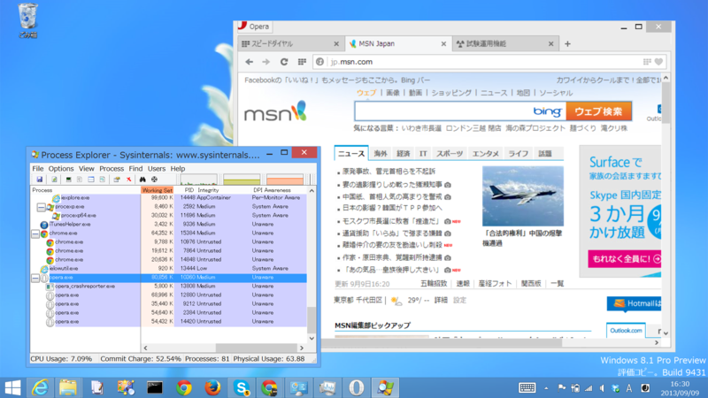
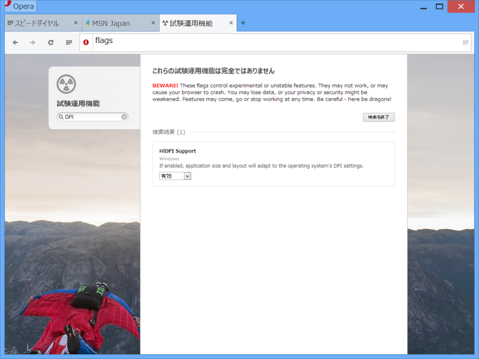
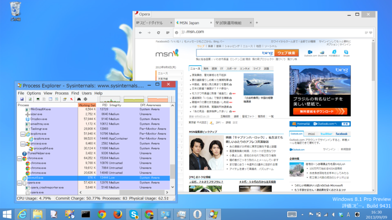
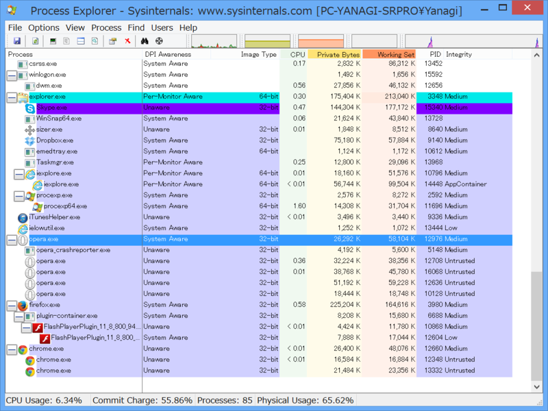

4大（？）ブラウザーの High DPI 対応
公開日：
Windows 8.1 では“Per-Monitor DPI”がサポートされる。これはモニターごとに異なる DPI を設定したマルチモニター環境で、アプリがモニターの DPI 設定を認識し、自動でスケーリングするという機能だ。――まぁ、WM_DPICHANGED（0x02E0）メッセージが飛んでくるだけなので、アプリ側の対応が必須なのだけど。
Besides bugfixes, the highlight of things of this Opera 17 Next release:
Opera Desktop Team - Opera 17 Next
- More settings and preferences, like startup handling options, manage search engines,
- Pinned tabs,
- DPI aware on Windows,
- Enhanced extensions APIs and possibility to hide extensions buttons.
「Opera 17 Next」（Opera、「Opera 17」のベータ版「Opera 17 Next」を公開 - 窓の杜）ではなんと“DPI aware on Windows”なのだそうで、これが“Per-Monitor DPI”なのかなぁ、と期待していたのだけど。

ちゃんとスケーリングせえへん。ただ拡大しているだけなので、表示がぼやけてる。

実はこれ“試験運用機能”として提供されていて、opera://flags で有効にして Opera を再起動しなきゃいけない。

とりあえず、できた。クッキリカッチリ、美しいレンダリングだ。
でもこれ、実は――

“System Aware”！ これは単に「システムの DPI 設定をアプリに反映させますよ」というだけのもので、モニターごとの DPI 設定を検知する“Per-Monitor Aware”ではない。とても残念だ。
ちなみに、4大（？）ブラウザーの対応状況を調べてみたところ、以下の通りになった。ちなみに、Windows Sysinternals、高機能タスクマネージャー「Process Explorer」v15.4を公開 - 窓の杜 を使うと簡単に調べられる（要 Windows 8.1）。
| 初期状態 | 拡張設定 | |
| Internet Explorer 11 | Per-Monitor Aware | - |
| Google Chrome 29 | Unaware | Unaware（項目はあるが動作しない） |
| Mozilla Firefox 23 | System Aware | - |
| Opera 17 | Unaware | System Aware |
ブラウザーによって Stable だったり Beta だったりが不公平だけど、そこは勘弁して。とりあえずシステムにインストールされていたブラウザーで試しただけで……全部統一するのは面倒臭かったのデス。
それにしても、Google Chrome の未対応はとくに残念。Flag はあるのだけど、自分の環境では動作しなかった。Surface Pro の DPI 設定は初期状態で 150％ なので、最近アプリの High DPI 対応に敏感になっているのだよね。非対応アプリだと表示がボヤけてあかん。クロスプラットフォームなアプリはここらへんの対応が全体的に弱い印象。Windows Forms？ 知らない子ですね……。